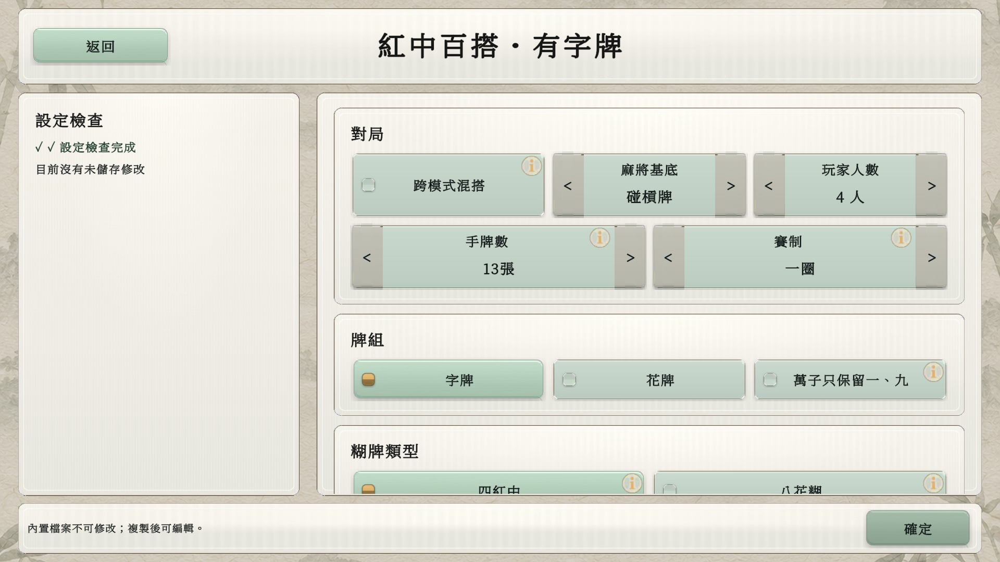
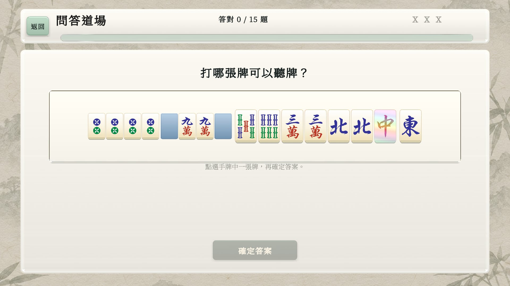
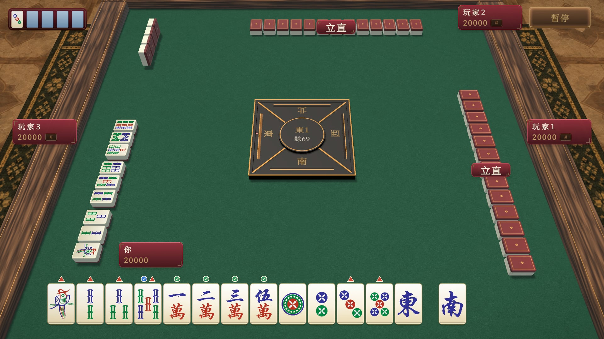
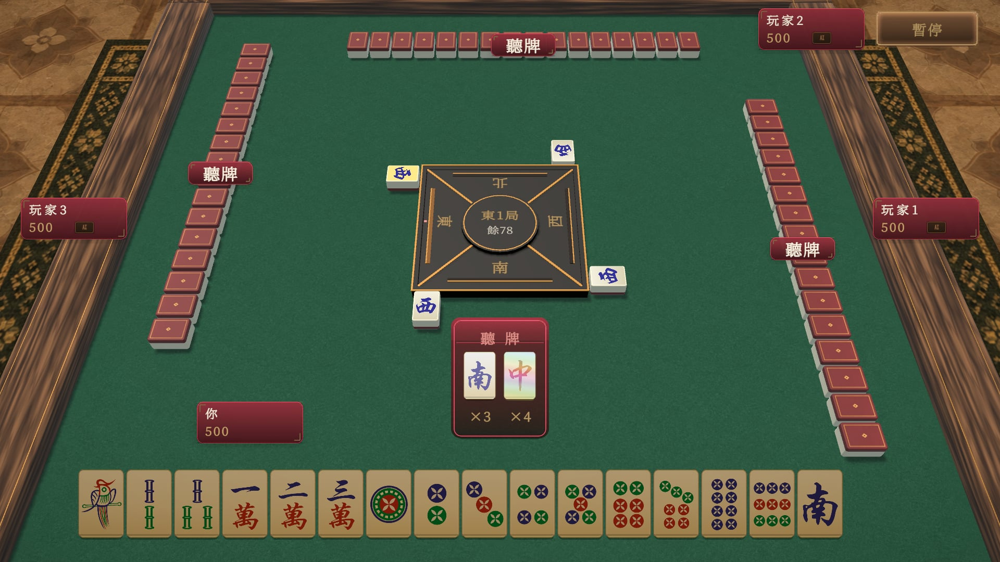
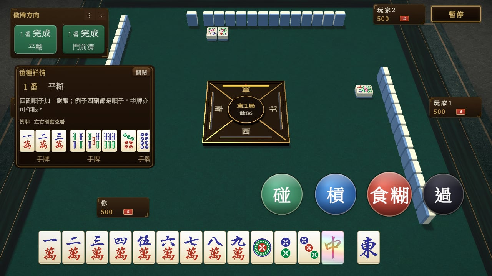
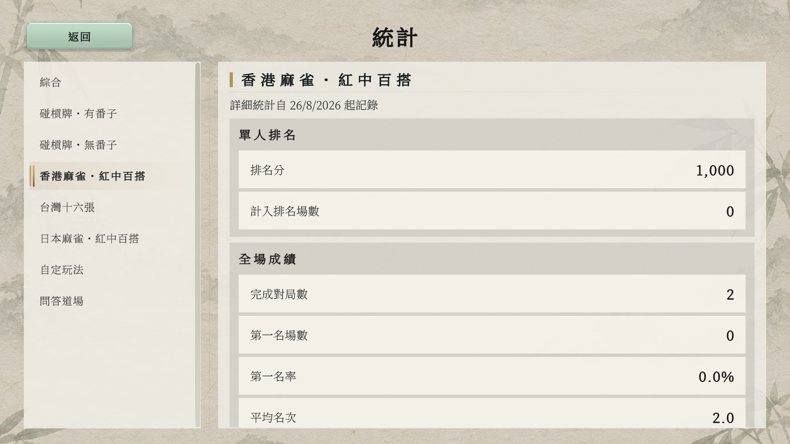

01
WILD CARD
紅中代替任何牌
紅中可以補足組合，帶來更多食糊路線。唔同模式嘅百搭限制各有不同，自定玩法更可逐個牌型設定。

01 WILD CARD
MAHJONG
紅中百搭萬能牌扭轉牌局
多種規則香港、台灣、日本玩法
自訂牌局百搭、計分、番種由你設定
核心玩法
由經典紅中變出發，探索唔同地方嘅麻將玩法。 每個模式都有獨立規則；食牌、食糊同計分方式，以局內規則說明為準。
WILD CARD
紅中可以補足組合，帶來更多食糊路線。唔同模式嘅百搭限制各有不同，自定玩法更可逐個牌型設定。
經典紅中變
有番子 / 無番子
五種正式模式 + 自定玩法
經典紅中變有「有番子」同「無番子」兩款，再加香港、台灣同日本玩法。五種正式單人模式各自記錄統計與排名分，練邊款都睇到進步。
01 / 02 · 經典紅中變
保留字牌嘅更多組合，或者專注萬、筒、索。紅中百搭、碰槓與扎碼，兩款熟悉玩法隨時開局。
13 張 · 碰槓 · 紅中百搭03 · 香港麻將
上牌、碰槓、計番，喺熟悉嘅香港玩法加入紅中百搭。按番數結算，挑戰更有價值嘅食糊路線。
13 張 · 香港計番 · 紅中百搭04 · 台灣麻將
五組一對，更多手牌、更多組合。結合紅中百搭、補花與台數計分，體驗十六張嘅變化。
16 張 · 台數計分 · 紅中百搭05 · 日本麻將
探索立直、役種與寶牌，配合紅中百搭規則。獨立統計同排名分，記低每一場表現。
13 張 · 立直與役種 · 紅中百搭CUSTOM PLAYGROUND
由現有底版開始，或者完全自訂。調整二至四人、牌組、百搭、上碰槓與計分方式，再按番種、台種或役種決定開關及百搭用法。
儲存鍾意嘅設定，下次直接開局。自定玩法獨立記錄統計，不計正式模式排名分。

線上連線 · 即將推出 私人房間功能敬請期待；目前可先體驗單人 AI 對戰。
練習與成長
想輕鬆打一局，定係認真練牌？按自己步伐揀難度，喺對局同問答之間慢慢累積經驗。
EASY / NORMAL / HARD
簡單、普通、困難，配合唔同程度。正式單人模式按難度及完場名次調整排名分，並各自記錄戰績。
QUIZ DOJO
沿用紅中變規則，練習叫糊牌、等待牌種類、最佳捨牌同打牌後叫糊，再睇答案回饋。唔使打完整局，都可以練習判斷。

最新功能預覽 · 2026.10.05
由做牌方向到防守提示，幫你理解每一步。以下展示開發中版本，實際可用功能以 Google Play 已安裝版本為準。

放大畫面 ↗01 · 危險 / 安全牌提示
香港、台灣、日本玩法按公開資訊估算危險牌。日本另用綠色剔號標示對所有對手安全、藍色剔號標示對已立直對手安全；藍色唔代表對其餘對手都安全。

放大畫面 ↗02 · 台灣報聽
先按聽牌，再揀合資格捨牌確認。正式報聽後，等待牌會持續顯示；張數按自己手牌同公開資訊更新，方便喺其他玩家回合繼續掌握局面。
顯示嘅係未見張數，並非牌牆實際剩牌。

香港做牌輔助
睇目前手牌嘅做牌目標，點開番種例牌同說明。選牌時可預覽叫糊牌，分辨番數不足、過水或只可自摸等限制。
提示可以開關，做牌方向由你決定。
四款外觀主題
原版風格、經典茶樓、夜海青瓷、玉石晨光。切換介面、牌桌、牌背同周圍環境，由暖木色到清雅淺色，揀你鍾意嘅牌局氣氛。
遊戲畫面
清晰手牌、立體牌桌，再配合做牌輔助同等待牌提示。以下為 Unity 遊戲畫面預覽；遊戲支援香港繁體、台灣繁體、簡體中文、英文同日文。
